정보처리산업기사 (2016-08-21 기출문제)
1과목: 데이터 베이스
1. 뷰(View)의 삭제 시 사용하는 문장의 형식은?
- DELETE VIEW ~ ;
- DROP VIEW ~ ;
- KILL VIEW ~ ;
- OUT VIEW ~ ;
(정답률: 85%)

2. EMPLOYEE 테이블의 DEPT_ID 열의 값이 “D1”인 튜플이 2개, “D2”인 튜플이 3개, “D3”인 튜플이 1개라고 하자. 다음 SQL문 ㉠, ㉡의 실행 결과 튜플 수를 올바르게 나타낸 것은?
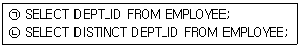
- ㉠ 3, ㉡ 1
- ㉠ 3, ㉡ 3
- ㉠ 6, ㉡ 1
- ㉠ 6, ㉡ 3
(정답률: 77%)
3. 릴레이션에서 속성의 수와 튜플의 수를 의미하는 것으로 순서대로 옳게 짝지어진 것은?
- CARDINALITY, DEGREE
- DOMAIN, DEGREE
- DEGREE, CARDINALITY
- DEGREE, DOMAIN
(정답률: 77%)
4. 인덱스 순차 파일(Index Sequential File)의 인덱스 영역의 종류에 해당하지 않는 것은?
- Primary data Index Area
- Track Index Area
- Cylinder Index Area
- Master Index Area
(정답률: 78%)
5. 데이터 삽입, 삭제가 top이라고 부르는 한쪽 끝에서만 이루어지는 후입선출(LIFO) 형태의 자료 구조는?
- 스택
- 큐
- 데크
- 원형 큐
(정답률: 77%)
6. SQL을 정의, 조작, 제어문으로 구분할 경우, 다음 중 나머지 셋과 성격이 다른 것은?
- SELECT
- UPDATE
- DELETE
- DROP
(정답률: 80%)
7. 순수 관계 연산자 중 Select 연산의 연산자 기호는?
- Ⅱ
- ▽
- ∪
- σ(시그마)
(정답률: 77%)
8. 어떤 트랜잭션이 수행을 하는 도중 수행이 잘못되었고 데이터베이스가 모순상태에 있을 때, 이 작업의 논리적 단위가 행한 모든 갱신 연산을 복구시키거나 취소해야 함을 트랜잭션 관리기에 알려주는 연산은?
- COMMIT
- ROLLBACK
- FETCH
- RECOVER
(정답률: 76%)
9. 뷰(View)에 대한 설명으로 옳지 않은 것은?
- 뷰로 구성된 내용에 대하여 삽입, 삭제, 갱신 연산에 제약이 없다.
- 실제 저장된 데이터 중에서 사용자가 필요한 내용만을 선별해서 볼 수 있다.
- 데이터 접근 제어로 보안을 제공한다.
- 실제로는 존재하지 않는 가상의 테이블이다.
(정답률: 79%)
10. 해싱 함수 기법 중 어떤 진법으로 표현된 주어진 레코드 키 값을 다른 진법으로 간주하고 키 값을 변환하여 홈 주소로 취하는 방식은?
- 숫자 분석(digit analysis)법
- 대수적 코딩(algebraic coding)법
- 기수(radix) 변환법
- 제곱(mid-square)법
(정답률: 66%)
11. 버블 정렬을 이용한 오름차순 정렬 시 다음 자료에 대한 2회전 후의 결과는?
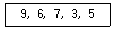
- 6, 7, 3, 5, 9
- 3, 5, 6, 7, 9
- 3, 5, 9, 6, 7
- 6, 3, 5, 7, 9
(정답률: 72%)
12. 개체 무결성 제약 조건에 대한 다음 설명 중 ( ) 안의 내용으로 옳은 것은?
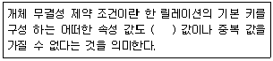
- NULL
- TUPLE
- DOMAIN
- ENTITY
(정답률: 87%)
13. 논리적 데이터 모델 중 오너-멤버(Owner-Member) 관계를 가지며, CODASYL DBTG 모델이라고도 하는 것은?
- E-R 모델
- 관계 데이터 모델
- 계층 데이터 모델
- 네트워크 데이터 모델
(정답률: 70%)
14. 아래 이진트리를 후위순서(postorder)로 운행한 결과는?
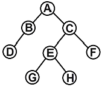
- ABCDEFGH
- DBGHEFCA
- ABDCEGHF
- BDGHEFAC
(정답률: 78%)
15. 제2정규형에서 제3정규형이 되기 위한 조건은?
- 원자 값이 아닌 도메인을 분해
- 부분 함수 종속 제거
- 이행 함수 종속 제거
- 후보 키를 통하지 않은 조인 종속 제거
(정답률: 79%)
16. 이진 검색(binary search) 기법을 적용하기 위한 선행 조건은?
- 자료가 반드시 정렬되어야 한다.
- 자료의 개수가 짝수이어야 한다.
- 자료의 구성은 비순차적이어야 한다.
- 자료의 구성은 홀수, 짝수 순으로 이루어져야 한다.
(정답률: 81%)
17. 연산의 결과로 새로운 릴레이션이 생성되는 절차식 언어는?
- 관계 대수
- 튜플 관계 해석
- 도메인 관계 해석
- 자연어
(정답률: 69%)
18. 관계 대수의 JOIN 연산자 기호는?(2번 보기가 일부 핸드폰 등에서 보이지 않아서 괄호 뒤에 다시 표기하여 둡니다.)
- ÷
- ⋈(
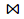
) - π
- ∩
(정답률: 82%)
19. Choose a sentence which doesn't explain the advantages from using DBMS.
- Redundancy can be reduced.
- Consistency can be avoided.
- The data can be shared.
- Security restrictions can be applied.
(정답률: 49%)
20. 다음 인접 행렬(Adjacency Matrix)에 대응되는 그래프(Graph)를 그렸을 때, 옳은 것은?
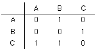


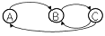
(정답률: 82%)
2과목: 전자 계산기 구조
21. JK 플립플롭의 동작 설명으로 틀린 것은?
- J, K 입력이 모두 0일 때 출력은 변하지 않는다.
- J=0, K=1 일 때 Q=0, Q'=1 이다.
- J=1, K=0 일 때 Q=1, Q'=0 이다.
- J=1, K=1 일 때 출력은 무의미하며, 사용이 안 된다.
(정답률: 64%)
22. 채널(channel)을 설명한 것으로 틀린 것은?
- CPU의 idle time을 줄인다.
- I/O 속도를 향상시킨다.
- MODEM의 기능을 갖는다.
- 고속 방식과 저속 방식의 채널이 있다.
(정답률: 63%)
23. 하드웨어 우선순위 인터럽트의 특징이 아닌 것은?
- 가격이 비싸다.
- 유연성이 있다.
- 응답속도가 빠르다.
- 하드웨어로 우선순위를 결정한다.
(정답률: 62%)
24. 인스트럭션은 중앙처리장치를 이용하여 주행되는데 다음 중 명령을 읽어내는 사이클(cycle)은?
- fetch
- execute
- indirect
- timing
(정답률: 69%)
25. 그림과 같은 연산회로에서 얻어지는 마이크로 오퍼레이션은? (단, A, 0, C는 입력이고, Y는 출력이다.)
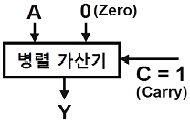
- A를 1 감소
- A를 전송
- A를 1 증가
- 감산
(정답률: 67%)
26. 다음 ROM의 회로도와 진리표의 내용을 토대로 A, B, C 값을 구한 결과는?(문제 복원 오류로 진리표 값이 없습니다. 정답은 1번입니다.)
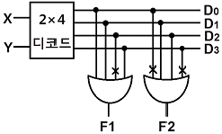
- A=0, B=1, C=0
- A=0, B=1, C=1
- A=1, B=1, C=0
- A=1, B=1, C=1
(정답률: 67%)
27. 비트 스트링의 일부분 또는 전체를 마스킹(Masking) 할 때 사용 하는 연산은?
- Move
- AND
- OR
- Complement
(정답률: 64%)
28. 한 개의 마이크로 오퍼레이션 수행에 필요한 시간을 무엇이라 하는가?
- access time
- micro cycle time
- seek time
- search time
(정답률: 66%)
29. 다음 보조기억장치 중 SASD 방식인 것은?
- 자기드럼장치(Magnetic Drum Unit)
- 자기코어장치(Magnetic Core Unit)
- 자기디스크장치(Magnetic Disk Unit)
- 자기테이프장치(Magnetic Tape Unit)
(정답률: 62%)
30. 누산기 Acc에 적재되어 있는 값이 16진수 B6, 레지스터 B의 값이 16진수 3C일 때, “Acc AND B” 명령을 실행하고 난 후의 Acc 의 최종 값은?
- 4B
- 23
- 34
- 37
(정답률: 52%)
31. 입출력 장치와 기억장치의 데이터 전송을 위하여 입출력 제어기가 필요한 가장 중요한 이유는?
- 동작속도
- 인터럽트
- 정보의 양
- 메모리의 관리
(정답률: 58%)
32. 컴퓨터 실행 중 특수한 상태가 발생할 때 제어장치의 조정에 의해 특수한 상태를 처리한 후 먼저 수행하는 프로그램으로 되돌아가는 조작은?
- Interrupt
- Controlling
- Trapping
- Deadlock
(정답률: 76%)
33. 사용되는 문자의 빈도수에 따라서 코드의 길이가 달라지는 코드는?
- 7421
- 그레이(gray)
- 바이퀴너리(biquinary)
- 허프만(huffman)
(정답률: 54%)
34. 8진수 375.24를 10진수로 변환하면?
- 253.0625
- 253.3125
- 353.0625
- 353.3125
(정답률: 52%)
35. 다음 ( ) 안에 알맞은 것은?
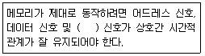
- 제어
- 호출
- 액티브(active)
- 상태(state)
(정답률: 65%)
36. 세그먼트-페이징(segment-paging) 기법을 이용하는 가상 메모리(virtual memory) 시스템에서 논리 주소 형식(logical address format)이 다음과 같다면 총 주소 공간의 크기는?
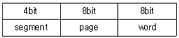
- 28 워드
- 212 워드
- 216 워드
- 220 워드
(정답률: 60%)
37. 비수치 연산에 속하지 않은 것은?
- 논리적 연산
- 로테이트(rotate)
- 사칙 연산
- 시프트(shift)
(정답률: 69%)
38. SRAM과 DRAM의 특징을 가장 옳게 설명한 것은?
- SRAM은 읽기전용, DRAM은 읽고 쓸 수 있다.
- SRAM은 DRAM보다 가격이 저렴하여 메인메모리로 주로 사용된다.
- 동적 RAM은 refresh가 필요하다.
- 정적 RAM은 refresh가 필요하다.
(정답률: 60%)
39. 중앙처리장치에서 정보를 기억 장치에 기억시키는 것을 무엇이라 하는가?
- Load
- Store
- Fetch
- Transfer
(정답률: 66%)
40. 10진수 19를 그레이 코드(Gray Code)로 변환하면?
- 10010
- 11000
- 11010
- 11110
(정답률: 58%)
3과목: 시스템분석설계
41. HIPO(Hierarchy plus Input Process Output)의 설명 중 거리가 먼 것은?
- 프로그램 구조와 데이터구조나 데이터 구조간의 관계를 표현할 수 없다.
- 하향식 기법으로 절차보다는 기능 중심이다.
- 총괄도표보다 기능을 알기 쉽게 Input-Process-Output으로 표기한 방법이 도형목차이다.
- 도형목차의 내용을 입력, 처리, 출력관계로 도표화한 것이 총괄도표이다.
(정답률: 29%)
42. 파일 편성 설계 중 랜덤 편성 방법에 대한 설명으로 옳지 않은 것은?
- 평균접근 시간 내에 검색이 가능하므로 처리 시간이 빠르다.
- 레코드의 키 값으로부터 레코드가 기억되어 있는 기억장소의 주소를 직접 계산함으로써 원하는 레코드를 직접 접근할 수 있다.
- 특정 레코드에 대한 직접 접근이 가능하므로 대화형 처리에 많이 이용한다.
- 키-주소변환방법에 의한 충돌 발생이 없으므로 이를 위한 기억공간 확보가 필요 없다.
(정답률: 70%)
43. 시스템 설계 시 필요한 과정의 순서를 올바르게 나열한 것은?(일부 핸드폰에서 특수기호가 정상적으로 보이지 않아서 괄호뒤에 다시 표기하여 둡니다.)
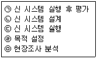
- ㉡→㉤→㉣→㉢→㉠(ㄴ-ㅁ-ㄹ-ㄷ-ㄱ)
- ㉢→㉣→㉡→㉤→㉠(ㄷ-ㄹ-ㄴ-ㅁ-ㄱ)
- ㉣→㉤→㉡→㉢→㉠(ㄹ-ㅁ-ㄴ-ㄷ-ㄱ)
- ㉡→㉤→㉣→㉠→㉢(ㄴ-ㅁ-ㄹ-ㄱ-ㄷ)
(정답률: 71%)
44. 입력된 자료가 처리되어 일단 출력된 후 이용자를 거쳐 다시 재입력되는 방식으로 공과금, 보험료 징수 등의 지로용지를 처리하는데 사용되는 입력방식은 무엇인가?
- 집중 매체화형 시스템
- 턴어라운드 시스템
- 분산 매체화형 시스템
- 직접 입력 시스템
(정답률: 73%)
45. 입·출력 자료 및 코드의 설계는 다음 시스템 설계 단계의 보기 중 어느 단계에서 하는 것이 바람직한가?
- 조사분석단계
- 상세설계단계
- 프로그램작성단계
- 실시단계
(정답률: 63%)
46. 특정 조건이 주어진 파일 중에서 그 조건에 만족되는 것과 그렇지 않은 것으로 분리 처리하는 표준 처리 패턴은?
- Update
- Distribution
- Collate
- Merge
(정답률: 67%)
47. 코드 설계의 순서가 바르게 된 것은?
- 코드항목 결정 → 범위와 사용기간 설정 → 코드화 항목 특성 분석 →코드설계 및 검사 → 코드표 작성
- 코드화 항목 특성 분석 → 코드항목 결정 → 범위와 사용 기간 설정 → 코드설계 및 검사 → 코드표 작성
- 코드화 항목 특성 분석 → 코드항목 결정 → 범위와 사용 기간 설정 → 코드표 작성 → 코드설계 및 검사
- 코드항목 결정 → 범위와 사용기간 설정 → 코드설계 및 검사 → 코드표 작성 → 코드화 항목 특성 분석
(정답률: 50%)
48. 모듈의 크기를 적게 하고, 간결하게 함으로써 얻는 이점이 아닌 것은?
- 독립성이 강해진다.
- 이해하기 쉽다.
- 테스트하기가 쉽다.
- 데이터의 기밀보호가 쉽다.
(정답률: 62%)
49. 데이터베이스에서 개체(entity)에 해당하며, 실제적인 하나의 처리 데이터로 사용되는 단위는?
- 필드
- 레코드
- 파일
- 바이트
(정답률: 56%)
50. 자료 흐름도의 자료 저장소를 종합적이고, 체계적으로 모델링하기 위한 도구는?
- 의사 결정도
- 설계구조 도표
- 상태 전이도
- 개체 관계도
(정답률: 49%)
51. 객체가 메시지를 받아 실행해야 할 객체의 구체적인 연산을 정의한 것은?
- Instance
- Method
- Message
- Class
(정답률: 70%)
52. 파일설계 단계 중 다음 사항과 관계되는 것은?
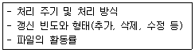
- 파일 항목 검토
- 파일 특성 조사
- 파일 매체 검토
- 파일 편성법 검토
(정답률: 60%)
53. 마스터 파일(master file) 안의 정보 변동에 의해 추가, 삭제, 교환을 하고 새로운 내용의 마스터 파일을 작성하는 것을 무엇이라 하는가?
- 병합(merge)
- 매칭(matching)
- 변환(conversion)
- 갱신(update)
(정답률: 74%)
54. 코드 오류 체크의 종류 중 대차대조표에서 대변과 차변의 합계를 비교, 체크하는 것과 같이 입력 정보의 여러 데이터가 특정 항목 합계 값과 같다는 사실을 알고 있을 때 컴퓨터를 이용해서 계산한 값과 분명히 같은지를 체크하는 방법은?
- Range Check
- Matching Check
- Block Check
- Balance Check
(정답률: 54%)
55. 시스템의 5가지 기본 요소 중 다음과 같은 특징을 갖는 것은?
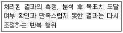
- 입력(input)
- 제어(control)
- 피드백(feedback)
- 처리(process)
(정답률: 77%)
56. 파일 내의 자료와 대조 파일에 있는 자료 중 동일한 것들만 골라서 파일을 만드는 작업은?
- 조합(Collate)
- 갱신(Update)
- 병합(Merge)
- 정렬(Sort)
(정답률: 54%)
57. 모듈이 갖는 4개의 기본 속성 중 틀리게 연결한 것은?
- 입력 - 호출한 서브모듈로부터 자료를 전달받는 작용
- 기능 - 출력을 생성하기 위해 입력을 가하는 작용
- 출력 - 올바른 기능을 수행하기 위한 논리적인 절차
- 내부 자료 – 모듈의 고유한 작업 영역으로서 모듈 내에서만 이용하는 변수나 자료
(정답률: 52%)
58. 코드(code) 설계 시 유의사항으로 거리가 먼 것은?
- 다양성이 있어야 한다.
- 컴퓨터 처리에 적합하여야 한다.
- 체계성이 있어야 한다.
- 확장성이 있어야 한다.
(정답률: 73%)
59. 문서화의 목적으로 거리가 먼 것은?
- 시스템 개발 후의 변경에 따른 혼란을 방지할 수 있다.
- 개발 후에 시스템 유지보수가 용이하다.
- 복수 개발자에 의한 병행 개발이 가능하다.
- 시스템 개발 과정에서의 요식적 절차이다.
(정답률: 74%)
60. 코드의 기능으로 거리가 먼 것은?
- 표준화 기능
- 분류 기능
- 간소화 기능
- 균형 기능
(정답률: 59%)
4과목: 운영체제
61. 운영체제의 기능에 해당하는 것은?
- 고급 언어를 기계어로 변환한다.
- 사용자에게 시스템 자원을 쉽고 효율적으로 사용할 수 있도록 한다.
- 데이터 구조의 정의, 데이터 조작, 데이터 제어 기능을 갖추고 비절차적 질의의 역할을 담당한다.
- 사용자와 데이터베이스 사이에서 사용자의 요구에 따라 정보를 생성해 주고, 데이터베이스를 관리한다.
(정답률: 56%)
62. 프로세스의 정의와 거리가 먼 것은?
- 디스크 상에 저장된 파일 형태의 내용
- 실행 중인 프로그램
- 프로시저가 활동 중인 것
- 운영체제가 관리하는 실행 단위
(정답률: 66%)
63. 파일 시스템 기능에 대한 설명으로 가장 적합하지 않은 것은?
- 사용자가 파일을 생성, 수정, 제거할 수 있도록 한다.
- 적절한 제어방식을 통해 다른 사람의 파일을 공동으로 사용할 수 있도록 한다.
- 사용자가 이용하기 편리하도록 사용자에게 익숙한 인터페이스를 제공해야 한다.
- 정보의 암호화와 해독에 대한 기능은 제공하지 않는다.
(정답률: 62%)
64. Round-robin Scheduling 방식에 대한 설명으로 가장 적합하지 않은 것은?
- 시간 할당량이 작아질수록 문맥교환의 과부하는 상대적으로 낮아진다.
- 할당된 시간(Time Slice) 내에 작업이 끝나지 않으면 대기 큐의 맨 뒤로 그 작업을 배치한다.
- 시간 할당량이 충분히 크면 FIFO 방식과 비슷하다.
- 적절한 응답시간이 보장되므로 시분할 시스템에 유용하다.
(정답률: 63%)
65. 교착 상태의 해결 방법 중 Banker’s Algorithm과 관계되는 것은?
- Avoidance
- Prevention
- Detection
- Recovery
(정답률: 52%)
66. SJF(Shortest Job First) 스케줄링에서 작업도착 시간과 CPU 사용 시간은 다음 표와 같다. 모든 작업들의 평균대기시간은 얼마인가?
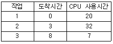
- 15
- 12
- 9
- 6
(정답률: 60%)
67. 분산 처리 시스템의 장점이 아닌 것은?
- 자원의 공유
- 신뢰성
- 성능 향상
- 소프트웨어 개발 용이
(정답률: 48%)
68. 프로세스에 대한 설명으로 틀린 것은?
- 지정된 결과를 얻기 위한 일련의 계통적 동작을 말한다.
- 목적 또는 결과에 따라 발생되는 사건들의 과정을 말한다.
- 프로세스는 프로그램 자체만으로 이루어져 있다.
- CPU에 의해 수행되는 사용자 및 시스템 프로그램을 말한다.
(정답률: 66%)
69. 시스템에 포함되어 있는 정보를 파괴할 때 사용될 수 있는 취약점을 최대한 줄이는 것을 보안성 유지라 할 때, 보안의 3대 요구 조건이 아닌 것은?
- safety
- confidentiality
- integrity
- availability
(정답률: 39%)
70. Page Fault가 계속 발생되어 프로세스가 수행되는 시간보다 페이지 교체에 소비되는 시간이 더 많은 경우를 무엇이라고 하는가?
- scheduling
- thrashing
- prepaging
- working set
(정답률: 67%)
71. Virtual Memory의 일반적인 구현방법으로 가장 적합한 것은?
- thrashing, compaction
- segmentation, thrashing
- monitor, overlay
- paging, segmentation
(정답률: 63%)
72. UNIX시스템의 CPU 스케줄러에 대한 설명 중 틀린 것은?
- 우선순위를 기반으로 하는 multilevel feedback을 갖는 round robin 방식을 사용한다.
- 스케줄링에 필요한 우선순위는 사용자 모드와 커널 모드의 우선순위로 분류된다.
- 커널 모드의 프로세스들도 인터럽트가 가능하다.
- 사용자 모드에 있는 프로세스는 CPU 사용량이 많을수록 우선순위가 낮아진다.
(정답률: 27%)
73. 현재 헤드의 위치는 100번 트랙이며, 바깥쪽에서 안쪽으로 진행 중이었다. 디스크 대기 큐에 다음과 같은 순서의 액세스 요청이 대기 중이다. SSTF 스케줄링 기법을 사용할 경우 제일 먼저 처리되는 트랙은? (단, 가장 안쪽 트랙은 0 이다.)
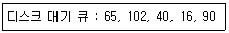
- 16
- 40
- 90
- 102
(정답률: 60%)
74. 분산 파일 시스템 구조를 옳게 표현한 것은?
- client/server 구조
- mainframe/terminal 구조
- ring 구조
- bus 구조
(정답률: 52%)
75. 다음 중 UNIX 구성이 아닌 것은?
- Shell
- Kernel
- Exec
- Utility Program
(정답률: 60%)
76. 다음과 같은 트랙이 요청되어 큐에 도착하였다. 모든 트랙을 서비스하기 위하여 LOOK 스케줄링 기법이 사용되었을 때 모두 몇 트랙의 헤드 이동이 생기는가? (단, 현재 헤드의 위치는 50 트랙 이고 헤드는 트랙 0 방향으로 움직이고 있다.)
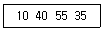
- 50
- 85
- 1⑤
- 110
(정답률: 45%)
77. 연산 P, V와 정수 변수를 이용하여 동기화 문제를 해결하는 것은?
- Semaphore
- Critical Section
- Mutual Exclusion
- Monitor
(정답률: 63%)
78. 불연속 할당(non-contiguous allocation) 기법의 블록 할당방식에 해당하지 않는 것은?
- 블록 체인기법
- 색인블록 체인기법
- 세그먼트 블록 체인기법
- 블록 지향파일 사상기법
(정답률: 29%)
79. 기억장소의 초기 상태가 다음 그림과 같을 때, 21K를 필요로 하는 프로세스가 도착하여 최적 적합(Best-fit)방식을 적용했을 경우 할당되는 기억장소는?
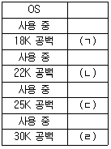
- (ㄱ)
- (ㄴ)
- (ㄷ)
- (ㄹ)
(정답률: 74%)
80. 데드라인 스케줄링에 대한 설명 중 옳지 않은 것은?
- 프로세스들이 특정 시간 안에 마치도록 스케줄링
- 데드라인을 놓치면 프로세스 가치가 낮아짐
- 정확한 자원 요구량을 미리 제시하는 것이 필요
- 오버헤드 측면에서 안정적임
(정답률: 53%)
5과목: 정보통신개론
81. 정보통신에서 데이터 회선종단장치와 터미널 사이의 물리적, 전기적 접속규격은?
- LAB-P
- RS-232C
- X.25
- TCP/IP
(정답률: 43%)
82. 양방향 송·수신이 가능한 통신 방식은?
- simplex mode
- store and forward mode
- half-duplex mode
- full-duplex mode
(정답률: 75%)
83. Sliding Window 방식으로 통칭되며 송신 스테이션이 데이터 프레임을 연속적으로 NAK를 수신할 때까지 전송하는 방식은?
- Stop-and-Wait ARQ
- Go-back-N ARQ
- Selective-Repeat ARQ
- Adaptive ARQ
(정답률: 48%)
84. 데이터통신에서 Hamming code를 이용하여 에러를 정정하는 방식은?
- 군계수 체크방식
- 자기정정 부호방식
- 패리티 체크방식
- 정마크 부호방식
(정답률: 44%)
85. HDLC 전송프레임에서 시작 플래그 다음으로 전송되는 필드는?
- 제어부
- 주소부
- 정보부
- FCS
(정답률: 66%)
86. 다중화 기법 중 FDM방식에서 신호들이 전기적 중복 현상을 예방하기 위해서 인접하는 sub-channel들 사이에 위치하는 것은?
- Terminal
- Frequency band
- Guard band
- Poling
(정답률: 61%)
87. 동기식 전송방식 중 Bit-oriented 방식의 프로토콜이 아닌 것은?
- HDLC
- ADCCP
- BSC
- SDLC
(정답률: 41%)
88. 다음 중 HDLC의 Frame 구성 순서는? (단, A : Address, F : Flag, C : Control, I : Information, FCS : Frame Check Sequence)
- I → C → A → F → FCS → F
- C → F → I → FCS → A → F
- F → A → C → I → FCS →F
- F → FCS → A → C → I → F
(정답률: 64%)
89. 통신 프로토콜의 기본 구성요소가 아닌 것은?
- Interface
- Syntax
- Semantics
- Timing
(정답률: 58%)
90. 데이터와 확인신호(ACK) 등을 보내고 문자 동기를 유지하는 기능은 전송제어 절차 중 어느 단계에 속하는가?
- 데이터 링크의 설정
- 데이터 링크의 종결
- 정보의 전송
- 회선의 접속
(정답률: 44%)
91. 공동시청안테나를 이용하는 TV 방식으로 난시청 지역에 고감도 안테나를 설치하여, 이를 통해 수신한 양질의 TV 신호를 일정한 전송로를 통하여 수요자에게 제공하는 시스템은?
- HDTV
- CATV
- CCTV
- UHDTV
(정답률: 55%)
92. OSI 7 Layer에서 정보의 형식 설정과 코드의 변환, 암호화, 압축 등의 기능을 주로 수행하는 계층은?
- 데이터링크 계층
- 네트워크 계층
- 트랜스포트 계층
- 프레젠테이션 계층
(정답률: 58%)
93. 변조속도의 단위로 옳은 것은?
- Baud
- Bit
- Character
- Packet
(정답률: 69%)
94. 다음 중 DSU(Digital Service Unit)의 기능으로 옳은 것은?
- 아날로그 신호를 디지털 데이터로 변환시킨다.
- 디지털 데이터를 아날로그 신호로 변환시킨다.
- 아날로그 신호를 아날로그 데이터로 변환시킨다.
- 디지털 데이터를 디지털 신호로 변환시킨다.
(정답률: 57%)
95. TCP/IP Protocol에서 IP Layer에 해당하는 것은?
- HTTP
- ICMP
- SMTP
- UDP
(정답률: 48%)
96. 나이퀴스트(Nyquist) Sampling Theorem과 관련이 있는 것은?
- 표본화
- 양자화
- 부호화
- 복호화
(정답률: 52%)
97. 점대점 링크를 통하여 인터넷 접속에 사용되는 IETF의 표준 프로토콜은?
- HDLC
- LLC
- PPP
- SLIP
(정답률: 62%)
98. IP 주소의 수는 한정되어 있으므로 어떤 기관에서 배정 받은 하나의 네트워크 주소를 다시 여러 개의 작은 네트워크로 나누어 사용하는 것은?
- Subnetting
- SLIP
- MAC
- IP address
(정답률: 58%)
99. 디지털 데이터를 아날로그 신호로 변환하는 방식이 아닌 것은?
- ASK
- PCM
- FSK
- PSK
(정답률: 62%)
100. PCM(pulse code modulation) 방식의 신호 변환 과정을 옳게 나열한 것은?
- Sampling → Quantization → Encoding
- Encoding → Quantization → Sampling
- Quantization → Sampling → Encoding
- Sampling → Encoding → Quantization
(정답률: 56%)